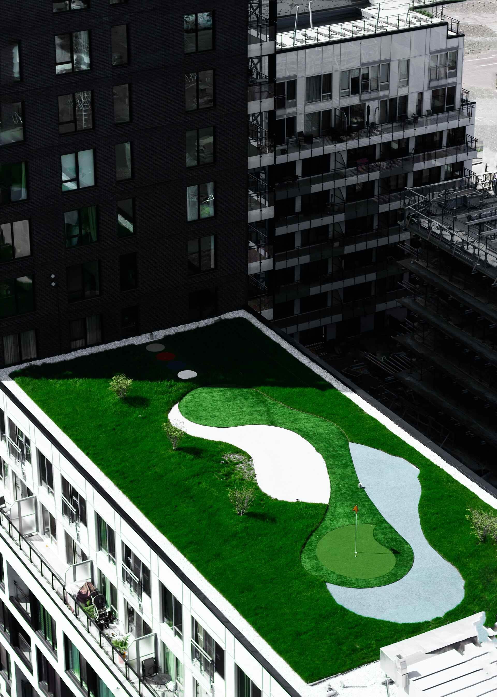
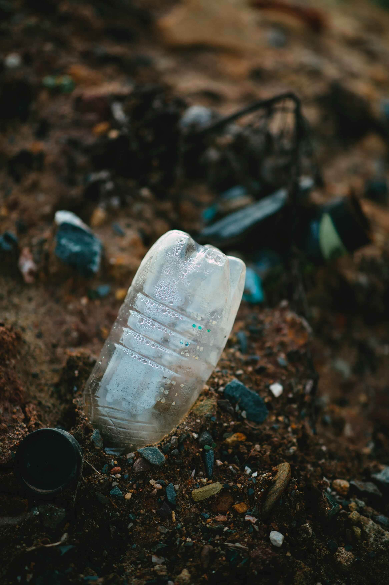

IoT Application
IoT mengacu pada suatu teknologi yang memanfaatkan internet untuk melakukan transfer dan transmisi data secara wireless.
Perangkat IoT atau "Internet of Things" biasanya dilengkapi dengan sensor yang memanfaatkan koneksi internet untuk berkomunikasi, menghubungkan, dan bertukar data dengan perangkat lainnya.
MENGAPA Urbanify MEMILIH
INTERNET OF THINGS
Urbanify memilih IoT sebagai sarana untuk mengedukasi tentang Smart City karena konsep teknologi IoT yang sangat penting dalam pengaplikasian kota berteknologi tinggi. karena IoT menghubungkan berbagai aspek kota seperti infrastruktur, transportasi, energi, pengelolaan limbah, dan layanan publik dengan internet untuk mengelola sumber daya dan meningkatkan kualitas hidup penduduk secara efisien, mudah dan tertata.
Urbanify
Contoh Pengaplikasian Perangkat IoT pada Lingkungan Hijau


Jurnal Terkait Smart Environment:
Perancangan Alat Penyiram Tanaman Otomatis pada Miniatur Greenhouse Berbasis IOT (Putri A. R., 2019)
IMPLEMENTASI SMART SECURITYCAMERA PENDUKUNG SISTEM KEAMANAN LINGKUNGAN MANDIRI BERBASIS INTERNET OF THING (IoT) (Setiadi H., et al., 2019)